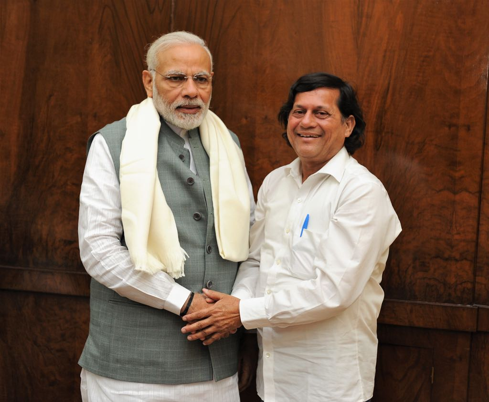

Dr. Achyuta Samanta
- A Social worker

Achyuta Samanta (born 20 January 1965) is the founder of Kalinga Institute of Industrial Technology (KIIT) Kalinga Institute of Social Sciences (KISS), which provides free accommodation, food, healthcare, and education from class 1 to post-graduation with vocational training; KIIT International School (KIS), an International Baccalaureate affiliated school, and Kalinga Institute of Medical Sciences (KIMS), a medical college.
Here's a quick Synopsis about Achyuta's Life
- As a social reformer, he has been propagating “ART OF GIVING” (philosophy of life), a concept aimed at bringing peace and happiness around the globe, “ART OF APPRECIATION” . EDUCATION” to over 5 lakh adolescent boys and girls in Odisha.
- He has 30 years of teaching experience to his credit so far.
- He founded a polytechnic institution while he was working as a Chemistry Lecturer in 1992 with $100, iron will and strong passion.
- He says “Positivity is the best way to sustainable success”.
- He is currently an elected member of Lok Sabha and works with a vision to make Kandhamal a model constituency.
- He is a bachelor, wedded to his work and leads a simple life in a two room apartment in Bhubaneswar, Odisha without a piece of land or property on his name.
"I will serve the society selflessly. The society has made me what I am. I will pay back the debt, without being complacent."